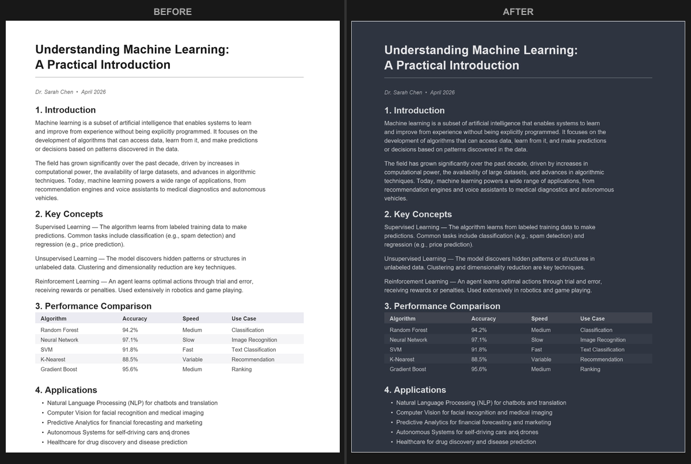

Microsoft Edge에서 PDF 다크 모드: 완전 가이드
간단한 답변: Microsoft Edge에는 PDF 리더가 내장되어 있으며, 「Force Dark Mode for Web Contents」 플래그를 통해 제한적인 다크 모드 지원이 가능합니다. Edge의 페이지 색상 설정도 사용할 수 있습니다. 어디에서나 사용 가능한 영구적인 다크 모드 PDF가 필요하다면, 이 무료 도구로 PDF를 변환하세요. 브라우저에서 바로 실행되며 파일 업로드가 필요 없습니다.
Edge의 내장 PDF 리더
Microsoft Edge에는 상당히 강력한 PDF 리더가 내장되어 있습니다. Edge에서 PDF 파일을 열면 플러그인이나 확장 프로그램 없이 브라우저 탭에서 바로 표시됩니다. 텍스트 선택, 검색, 주석, 소리 내어 읽기 기능을 지원합니다. 브라우저에서 가장 뛰어난 내장 PDF 리더 중 하나입니다.
하지만 Edge의 PDF 리더에는 PDF 콘텐츠에 대한 「다크 모드」 버튼이 없습니다. Edge를 다크 모드로 전환하면(「설정」>「외관」>「어둡게」) 도구 모음과 메뉴는 어두워지지만 PDF 페이지는 흰색으로 유지됩니다. 익숙한 문제인가요? Adobe Acrobat과 동일한 문제입니다.
방법 1: 「강제 다크 모드」 플래그
Edge에는 PDF를 포함한 모든 웹 콘텐츠에 다크 색상을 강제 적용하는 실험적 기능이 있습니다. 활성화 방법은 다음과 같습니다:
- Edge를 열고 주소창에 edge://flags를 입력합니다.
- 「Force Dark Mode for Web Contents」 또는 「Auto Dark Mode for Web Contents」를 검색합니다.
- 설정을 「Default」에서 「Enabled」로 변경합니다.
- 프롬프트가 나타나면 재시작을 클릭합니다.
재시작 후 Edge는 열리는 모든 웹페이지와 PDF에 다크 색상을 적용하려고 시도합니다. 텍스트 위주의 단순한 PDF에는 효과가 괜찮지만, 다음과 같은 단점이 있습니다:
- 이미지가 영향을 받습니다. 이 플래그는 사진, 로고, 그래프를 포함한 전체 페이지의 색상을 반전하거나 변경합니다. PDF에 시각적 요소가 포함된 경우 바래 보이거나 색상이 반전됩니다. 이 문제에 대해 자세히 알아보려면 다크 모드와 색상 반전 비교를 참조하세요.
- 결과가 일관되지 않습니다. 일부 PDF는 괜찮게 보이지만, 일부는 엉망이 됩니다. 이 알고리즘은 PDF 문서가 아닌 웹페이지용으로 설계되어 결과가 크게 다릅니다.
- 모든 콘텐츠에 영향을 미칩니다. 활성화되면 방문하는 모든 웹페이지도 강제로 다크 모드가 적용됩니다. 일부 사이트는 정상적으로 표시되지만 많은 사이트는 그렇지 않습니다. 이 플래그를 계속 켜고 끄게 됩니다.
- 실험적 기능입니다. Microsoft는 사전 통지 없이 Edge 업데이트에서 이 플래그를 변경, 손상 또는 제거할 수 있습니다.
방법 2: Edge의 소리 내어 읽기 및 몰입형 리더
일부 PDF의 경우 Edge의 몰입형 리더를 사용할 수 있습니다. 이 기능은 서식을 제거하고 텍스트를 깔끔하고 사용자 정의 가능한 보기로 제공합니다. 사용 방법은 다음과 같습니다:
- Edge에서 PDF를 엽니다.
- 주소창에서 몰입형 리더 아이콘(펼쳐진 책 모양)을 찾습니다.
- 사용 가능한 경우 클릭하고 배경색을 어둡게 변경합니다.
이 방법은 Edge가 유동적인 텍스트로 구문 분석할 수 있는 순수 텍스트 PDF에서만 작동합니다. 스캔 문서, 복잡한 레이아웃, 다단이나 표가 포함된 PDF에는 몰입형 리더를 사용할 수 없습니다. 작동할 때는 유용하지만, 가장 필요한 문서에서는 대부분 작동하지 않습니다.
방법 3: PDF 영구 변환
Edge(또는 다른 모든 곳)에서 다크 모드 PDF를 읽는 가장 안정적인 방법은 PDF 자체를 변환하는 것입니다. PDF Dark Mode Converter를 사용하면 브라우저에서 바로 변환할 수 있습니다:
- Edge(또는 아무 브라우저)에서 변환기를 엽니다.
- PDF 파일을 페이지에 끌어다 놓습니다.
- 16가지 이상의 테마 중에서 선택합니다: True Dark, Warm Dark, Sepia, Midnight Blue 등.
- 변환된 파일을 다운로드합니다.
전체 과정이 컴퓨터 로컬에서 완료됩니다. PDF가 어떤 서버로도 전송되지 않으므로 문서의 프라이버시가 유지됩니다. GPU 가속 변환을 사용하여 100페이지 이상의 문서도 몇 초 만에 처리할 수 있습니다.
변환 후 다크 모드 PDF는 어디에서나 사용할 수 있습니다: Edge, Chrome, Firefox, Adobe Reader, 스마트폰, 태블릿 또는 기타 모든 PDF 리더. 설정이 필요 없고, 기억해야 할 것도 없습니다.

세 가지 방법 비교
각 방법을 비교해 보겠습니다:
「강제 다크 모드」 플래그는 빠르게 활성화할 수 있지만 안정적이지 않습니다. 짧은 문서를 빠르게 훑어보는 용도로는 적합하지만, 장기적으로 사용하기에는 부적합합니다. 공유 가능한 파일이 생성되지 않습니다.
몰입형 리더는 작동할 때 효과가 좋지만, 순수 텍스트 PDF만 처리할 수 있으며 모든 서식이 제거됩니다. 삽화, 표, 복잡한 레이아웃이 포함된 문서에는 쓸모가 없습니다.
PDF 변환은 처음에 몇 초 더 걸리지만, 결과는 어디에서나 보기 좋고 서식과 이미지를 유지하며 공유할 수 있는 진정한 다크 모드 문서입니다. 밤에 PDF를 자주 읽는다면, 장기적으로 변환이 가장 실용적인 해결 방법입니다.
Edge와 다른 다크 모드 도구 함께 사용하기
Edge를 주력 브라우저로 사용하고 있다면 여러 방법을 조합할 수도 있습니다. 예를 들어:
- Edge 시스템 테마를 다크로 유지하여 편안한 일상 브라우징을 즐기세요.
- 밤에 읽어야 할 PDF를 받으면 새 탭에서 변환기를 열고 변환 후 다크 버전을 열어보세요.
- 다크 모드 외에 Windows 야간 모드(「설정」>「시스템」>「디스플레이」>「야간 모드」)를 사용하여 블루라이트를 줄이세요. 이것은 야간 독서에 특히 유용합니다.
Edge 대신 Chrome을 사용하신다면, 유사한 옵션을 다루는 Chrome에서 PDF 다크 모드 가이드도 있습니다.
자주 묻는 질문
Edge가 기본적으로 PDF 다크 모드를 지원하나요?
기본적으로는 지원하지 않습니다. Edge의 다크 모드 설정은 브라우저 인터페이스(도구 모음, 메뉴, 탭)에만 영향을 미치고 PDF 콘텐츠 영역에는 영향을 미치지 않습니다. 「Force Dark Mode」 플래그는 실험적 해결 방법이지 공식 기능이 아닙니다.
「강제 다크 모드」 플래그가 다른 웹페이지에 영향을 미치나요?
그럴 수 있습니다. 이 플래그는 모든 웹 콘텐츠에 다크 색상 변환을 적용하며, 많은 웹페이지가 이를 위해 설계되지 않았습니다. 일부 사이트에서 가독성 문제, 보이지 않는 텍스트, 이상하게 보이는 그래프가 발생할 수 있습니다.
모바일에서 Edge를 사용하여 다크 PDF를 읽을 수 있나요?
Edge 모바일 버전은 PDF 지원이 제한적이며 플래그 시스템이 없습니다. 가장 좋은 방법은 먼저 데스크톱(또는 모바일 브라우저)에서 변환 도구를 사용하여 PDF를 변환한 후 변환된 파일을 읽는 것입니다.
Edge와 다른 모든 곳에서 완벽하게 표시되는 다크 모드 PDF를 원하시나요? 지금 바로 PDF를 변환하세요—무료, 비공개, 가입 불필요.
자주 묻는 질문
Edge에는 내장 PDF 다크 모드가 없습니다. 다크 테마는 브라우저 인터페이스만 변경할 뿐 PDF 콘텐츠 영역은 변경하지 않습니다.
주소창에 edge://flags를 입력하고 Force Dark Mode for Web Contents를 검색한 후 Enabled로 설정하고 Edge를 재시작하세요. 단, PDF에 대한 효과는 불안정합니다.
네. PDF Dark Mode Converter를 사용하여 다크 색상이 포함된 새 PDF를 만드세요. 변환된 파일은 Edge 및 다른 모든 리더에서 어둡게 표시됩니다.